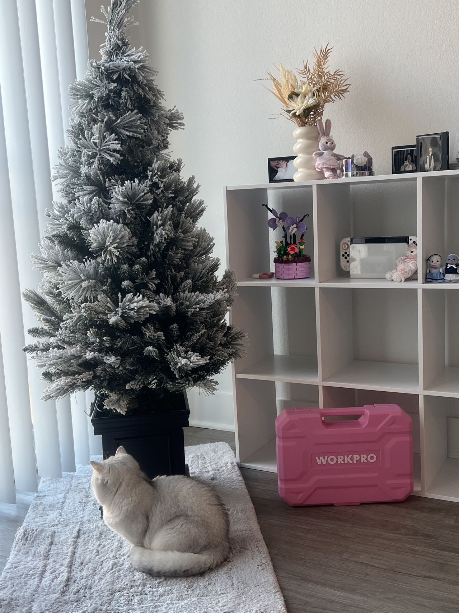
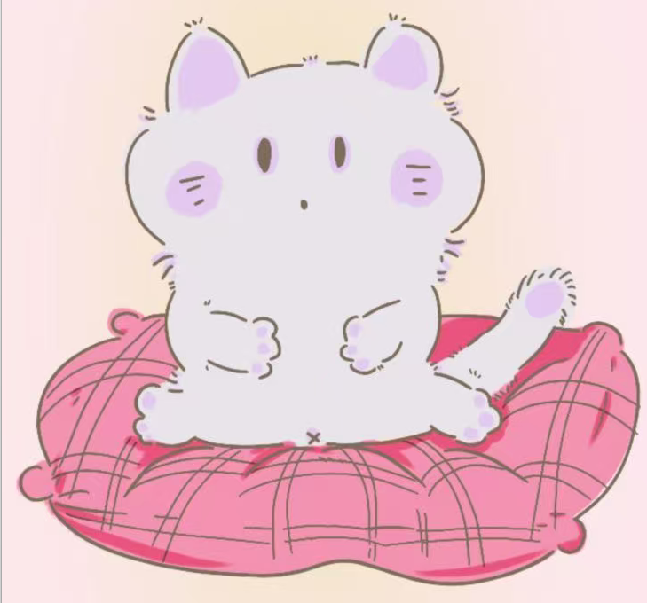

Our Story

What shapes The Moon Patch

Identity
Fashion as self-expressionComfort
Softness, warmth, and belongingFantasy
Dreamy worlds and playful imaginationWhy
The Moon Patch Matters
The Moon Patch began with the idea that fashion and games both let people build identity through appearance, mood, customization, and imagination.
Brand Vision, Identity through style
The brand draws from cozy fantasy worlds, moonlit colors, soft interfaces, collectible objects, and the emotional comfort found in gentle digital spaces.
Visual Mood, Soft fantasy storytelling
The Moon Patch uses concept-driven language to present fashion as worldbuilding: playful, dreamy, and emotionally meaningful at the same time.
Design Language, Cozy and imaginative
This project is made for people who love sweetness, fantasy, self-expression, and the quiet magic of soft visual storytelling.
Audience, Dreamers, players, and creatives